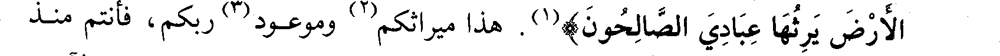
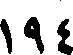
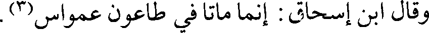
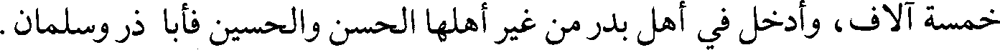
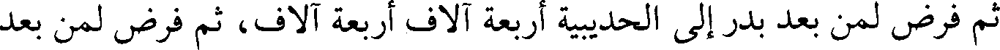

File: 000718.gt.txt (if the image is defective, simply delete all Arabic text and the line will be excluded)

الفيل، فارتجز وقال :
File: 000719.gt.txt (if the image is defective, simply delete all Arabic text and the line will be excluded)

يا لك من ذي أربع ما أكبرك. يا لك من يوم وغى ما أمكنك
File: 000720.gt.txt (if the image is defective, simply delete all Arabic text and the line will be excluded)

سنة ست، فقدم مهاجرا إلى المدينة(1) ومعه أربعون من أهله، فأتى رسول الله صلعم
File: 000721.gt.txt (if the image is defective, simply delete all Arabic text and the line will be excluded)

فاعتنقه وقبله.
File: 000722.gt.txt (if the image is defective, simply delete all Arabic text and the line will be excluded)

وشهد مع رسول الله صلعم ما بعد الحديبية، وقتل يوم اليرموك [شهيدا](2) في هذه
File: 000724.gt.txt (if the image is defective, simply delete all Arabic text and the line will be excluded)

أسلم بمكة قديما، وهاجر إلى الحبشة في الهجرة الثانية، ثم قدم مكة حين بلغه
File: 000725.gt.txt (if the image is defective, simply delete all Arabic text and the line will be excluded)

مهاجرة رسول الله صلعم إلى المدينة يريد اللحاق به، فحبسه أبوه وقومه بمكة حتى قدم
File: 000726.gt.txt (if the image is defective, simply delete all Arabic text and the line will be excluded)

المدينة بعد الخندق على النبي صلعم، فشهد ما بعد ذلك من المشاهد، وكان أصغر سنا من
File: 000727.gt.txt (if the image is defective, simply delete all Arabic text and the line will be excluded)

أخيه عمرو بن العاص، وكان عمرو يقول : عرضنا أنفسنا على رسول الله صلعم فقبله
File: 000728.gt.txt (if the image is defective, simply delete all Arabic text and the line will be excluded)

[أخبرنا محمد بن أبي طاهر، أنبأنا أبو إسحاق البرمكي، أخبرنا ابن حيويه،
File: 000729.gt.txt (if the image is defective, simply delete all Arabic text and the line will be excluded)

أخبرنا أحمد بن معروف، أخبرنا الحسين بن الفهم، حدثنا محمد بن سعد، قال :
File: 000731.gt.txt (if the image is defective, simply delete all Arabic text and the line will be excluded)

59/أ كان هشام بن العاص رجلا صالحا، لما كان يوم / أجنادين رأى من المسلمين
File: 000732.gt.txt (if the image is defective, simply delete all Arabic text and the line will be excluded)

بعض النكوص عن عدوهم، فألقى المغفر عن وجهه وجعل يتقدم في نحر العدو، وهو
File: 000733.gt.txt (if the image is defective, simply delete all Arabic text and the line will be excluded)

يصيح : يا معشر المسلمين إلي إلي، أنا هشام بن العاص، أمن الجنة تفرون؟ حتى
File: 000734.gt.txt (if the image is defective, simply delete all Arabic text and the line will be excluded)

روى محمد بن عمر: [وحدثني ثور بن يزيد، عن خلف](6) بن معدان، قال :
File: 000736.gt.txt (if the image is defective, simply delete all Arabic text and the line will be excluded)

الأرض يرثها عبادي الصالحون)(1). هذا ميراثكم(2) وموعود(3) ربكم، فأنتم منذ
File: 000737.gt.txt (if the image is defective, simply delete all Arabic text and the line will be excluded)

ثلاث حجج تطعمون منه، وتقتلون أهله؛ فإن تزهدوا في الدنيا وترغبوا في الآخرة
File: 000738.gt.txt (if the image is defective, simply delete all Arabic text and the line will be excluded)

يجمع الله لكم الدنيا والآخرة، ولا يقرب ذلك أحد إلى أجله، وإن تفشلوا وتضعفوا
File: 000739.gt.txt (if the image is defective, simply delete all Arabic text and the line will be excluded)

تذهب ريحكم، وتوبقوا آخرتكم.
File: 000740.gt.txt (if the image is defective, simply delete all Arabic text and the line will be excluded)

وقام عاصم(4) بن عمرو في المجردة، فقال : هذه بلاد قد أحل الله [لكم]
File: 000741.gt.txt (if the image is defective, simply delete all Arabic text and the line will be excluded)

أهلها(5)، وأنتم تنالون منهم منذ ثلاث سنين ما لا ينالون منكم، وأنتم الأعلون والله
File: 000742.gt.txt (if the image is defective, simply delete all Arabic text and the line will be excluded)

معكم؛ إن صبرتم فالضرب والطعن ولكم أموالهم ونساؤهم وأبناؤهم وبلادهم، ولئن
File: 000743.gt.txt (if the image is defective, simply delete all Arabic text and the line will be excluded)

الله، اجعلوا همكم الآخرة.
File: 000744.gt.txt (if the image is defective, simply delete all Arabic text and the line will be excluded)

وخطب كل أمير أصحابه، وتحاضوا / على الطاعة. وأذن مؤذن سعد لصلاة 65/أ
File: 000745.gt.txt (if the image is defective, simply delete all Arabic text and the line will be excluded)

الظهر، وقال رستم : أكل عمر كبدي أحرق الله كبده، علم هؤلاء حتى علموا.
File: 000746.gt.txt (if the image is defective, simply delete all Arabic text and the line will be excluded)

وأرسل(7) سعد الذين انتهى إليهم رأي الناس ونجدتهم؛ مثل : المغيرة،
File: 000747.gt.txt (if the image is defective, simply delete all Arabic text and the line will be excluded)

وحذيفة، وعاصم بن عمرو. ومن أهل النجدة : طليحة، وقيس الأسدي، وغالب،
File: 000748.gt.txt (if the image is defective, simply delete all Arabic text and the line will be excluded)

وعمرو بن معدي كرب. ومن الشعراء الشماخ، والحطيئة، وأوس بن مغراء، وعبدة بن
File: 000749.gt.txt (if the image is defective, simply delete all Arabic text and the line will be excluded)

الطبيب، وقال : انطلقوا فقوموا في الناس فذكروهم وحرضوهم على القتال.
File: 000750.gt.txt (if the image is defective, simply delete all Arabic text and the line will be excluded)

فقال عاصم:(8) يا معشر العرب، إنكم أعيان العرب ، وقد صمدتم لأعيان
File: 000751.gt.txt (if the image is defective, simply delete all Arabic text and the line will be excluded)

العجم، وإنما تخاطرون بالجنة، ويخاطرون بالدنيا، فلا يكونن على دنياهم أحوط
File: 000752.gt.txt (if the image is defective, simply delete all Arabic text and the line will be excluded)

منكم على آخرتكم، لا تحدثن اليوم أمرا يكون شيئا على العرب غدا.
File: 000753.gt.txt (if the image is defective, simply delete all Arabic text and the line will be excluded)

ومن الحوادث في سنة خمس عشرة [فرض العطاء، وعمل الدواوين](1)
File: 000754.gt.txt (if the image is defective, simply delete all Arabic text and the line will be excluded)

194
File: 000755.gt.txt (if the image is defective, simply delete all Arabic text and the line will be excluded)

أن عمر فرض الفروض، ودون الدواوين، وأعطى العطاء على مقدار السابقة في
File: 000756.gt.txt (if the image is defective, simply delete all Arabic text and the line will be excluded)

74/أ الإسلام، فكلمه / صفوان بن أمية، وسهيل، والحارث بن هشام(2) في تقليل
File: 000757.gt.txt (if the image is defective, simply delete all Arabic text and the line will be excluded)

عطائهم، فقال : إنما أعطيكم على السابقة في الإسلام لا على الأحساب، فقالوا :
File: 000758.gt.txt (if the image is defective, simply delete all Arabic text and the line will be excluded)

فنعم إذا، وأخذوا، ثم أعطى سهيل بن عمرو، والحارث بن هشام أربعة آلاف معونة
File: 000759.gt.txt (if the image is defective, simply delete all Arabic text and the line will be excluded)

على جهادهما، فلم يزالا مجاهدين حتى أصيبا في بعض تلك الدروب.
File: 000760.gt.txt (if the image is defective, simply delete all Arabic text and the line will be excluded)

وقال ابن إسحاق : إنما ماتا في طاعون عمواس(3).
File: 000761.gt.txt (if the image is defective, simply delete all Arabic text and the line will be excluded)

وقيل : بل دون الدواوين في سنة عشرين.
File: 000762.gt.txt (if the image is defective, simply delete all Arabic text and the line will be excluded)

ولما كتب(4) عمر الدواوين قال له عبد الرحمن وعثمان وعلي : إبدأ بنفسك،
File: 000763.gt.txt (if the image is defective, simply delete all Arabic text and the line will be excluded)

فقال : لا بل أبدأ بعم رسول الله صلعم، ثم الأقرب فالأقرب من رسول الله صلعم، فبدأ
File: 000764.gt.txt (if the image is defective, simply delete all Arabic text and the line will be excluded)

بالعباس، ففرض له خمسة وعشرين ألفا، وقيل : اثني عشر ألفا، ثم فرض لأهل بدر
File: 000765.gt.txt (if the image is defective, simply delete all Arabic text and the line will be excluded)

خمسة آلاف، وأدخل في أهل بدر من غير أهلها الحسن والحسين فأبا ذر وسلمان.
File: 000766.gt.txt (if the image is defective, simply delete all Arabic text and the line will be excluded)

ثم فرض لمن بعد بدر إلى الحديبية أربعة آلاف أربعة آلاف، ثم فرض لمن بعد
File: 000767.gt.txt (if the image is defective, simply delete all Arabic text and the line will be excluded)

الحديبية إلى الردة ثلاثة آلاف ثلاثة آلاف، ولمن ولي الأيام قبل القادسية وأصحاب
File: 000768.gt.txt (if the image is defective, simply delete all Arabic text and the line will be excluded)

اليرموك ألفين ألفين، ثم فرض لأهل البلاء البارع(5) ألف وخمسمائة ألف
File: 000769.gt.txt (if the image is defective, simply delete all Arabic text and the line will be excluded)

وخمسمائة(6)، وللروادف الذين ردفوا بعد افتتاح القادسية واليرموك ألفا ألفا، ثم لمن
File: 000770.gt.txt (if the image is defective, simply delete all Arabic text and the line will be excluded)

ردف الروادف خمسمائة خمسمائة، ثم لمن ردف أولئك ثلاثمائة ثلاثمائة، وسوى كل